1、DLL项目创建
易语言演示：
在易语言中点击“程序->新建”菜单，打开新建项目窗口后，选择“Windows动态链接库”即可创建dll项目。
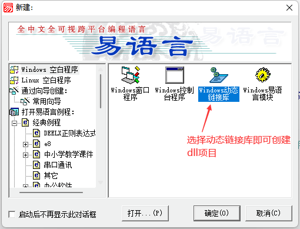
新建易语言dll项目后默认代码如下：
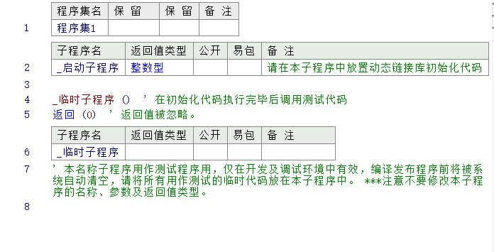
火山演示：
在火山视窗中点击“文件->新建->项目”，打开新建项目窗口后，可以选择“动态链接库”或“MFC动态链接库”。
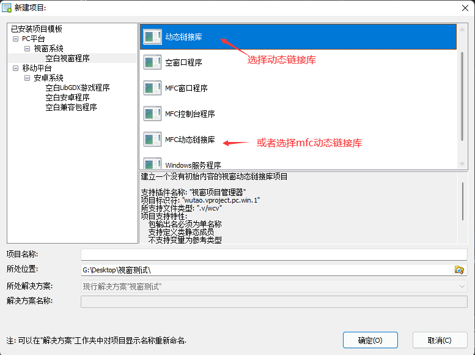
新建火山视窗DLL项目后默认代码如下：
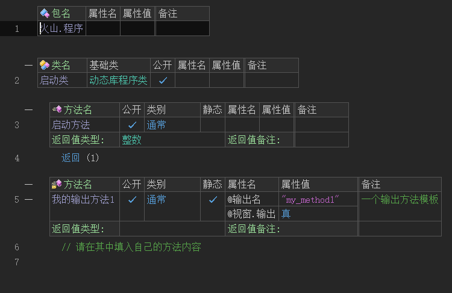
2、DLL方法编写
易语言演示：
在易语言中新建一个子程序公开即可，编译DLL后就可以在易语言中使用被公开的子程序。
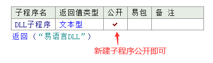
火山演示：
火山中编写DLL方法相对易语言稍微有点复杂，但格式是固定的。
(1) 必须勾选公开和静态。
(2) 提供一个“@输出名”属性，用于输出DLL英文方法名，因为在火山视窗中不支持中文名直接编译DLL。
(3) 必须提供一个“@视窗.输出”，属性值填写真，用来表示此方法为DLL方法。
注：DLL方法返回值只支持非文本型基本数据类型，且和普通方法一样参数也不支持数组。
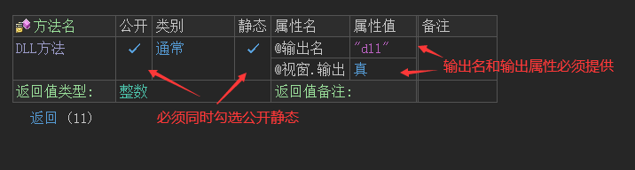
3、DLL调试
易语言演示：
在易语言中调试较为简单，直接在“_临时子程序”下编写要调试的代码，按“F5”进行调试即可。
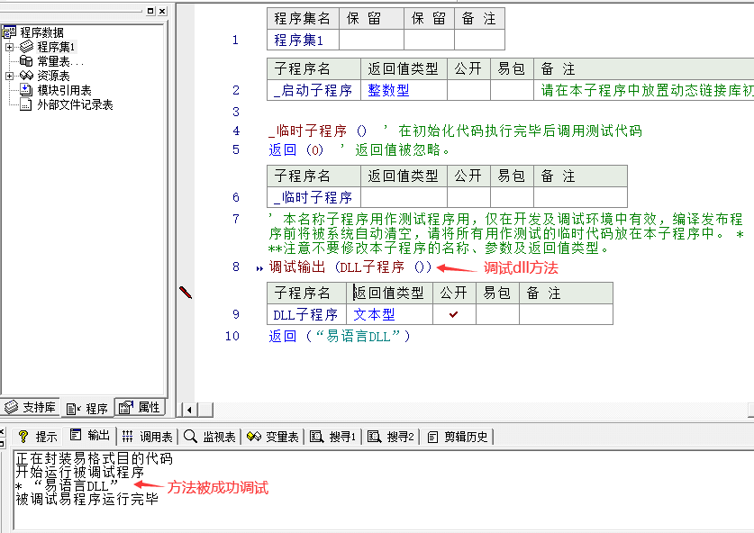
火山演示：
(1) 建立dll项目，在DLL方法中提供一个调试输出方法用于测试。
(2) 按F5快捷键，调试当前DLL项目，拿到DLL调试后的路径。
注：此时的DLL项目暂不支持调试会报错，忽略即可，主要是拿到DLL调试后的路径，便于在火山视窗项目中引用DLL。
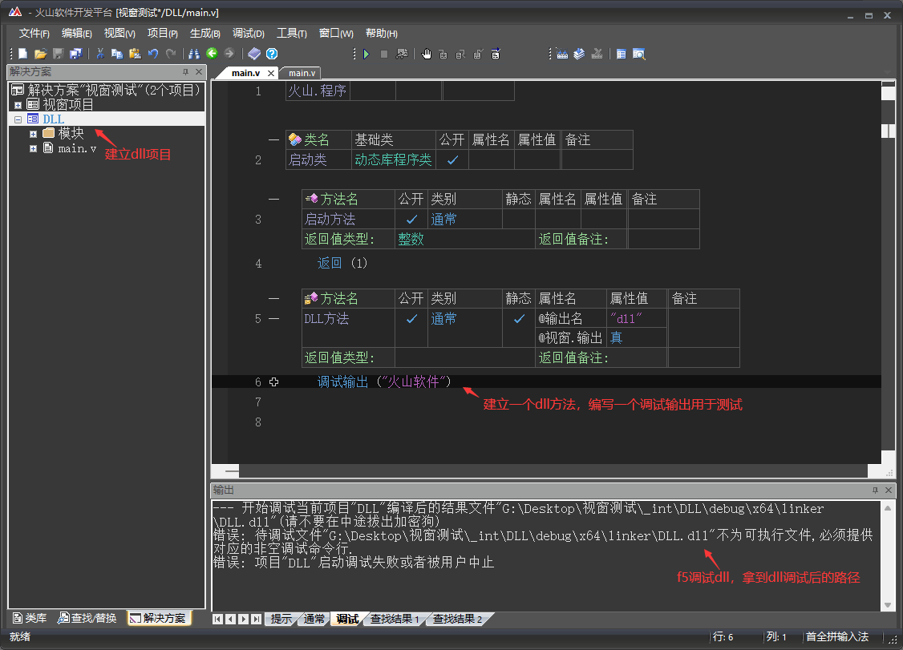
(3) 打开视窗项目，在视窗项目中引用DLL。
(4) 在主窗口创建完毕后，调用DLL方法。
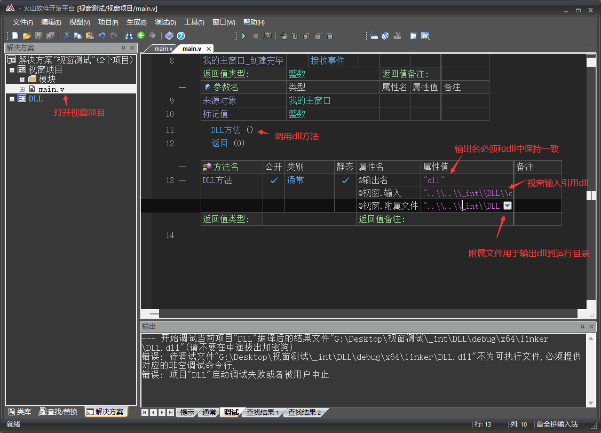
(5) 右键视窗项目编译发布版。
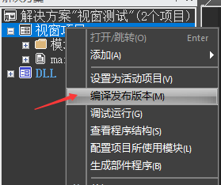
(6) 发布版编译成功后复制程序路径。
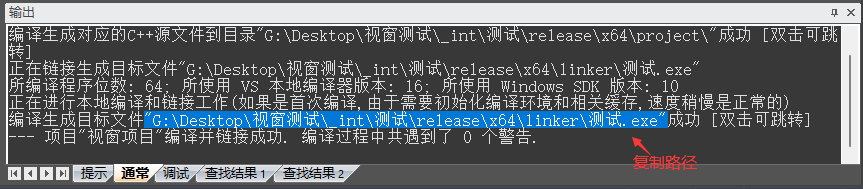
(7) 右键DLL项目，选择属性。
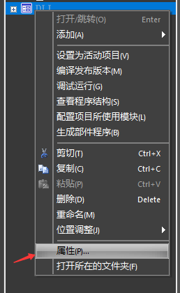
(8) 将复制的exe程序路径，粘贴到“调试->调试命令行”中即可。
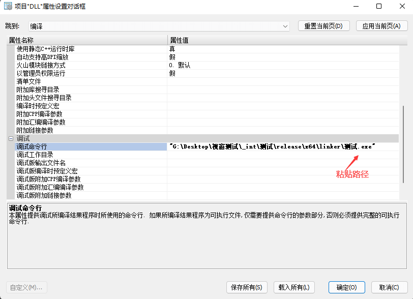
(9) 最后就可以在DLL项目中按F5调试DLL。
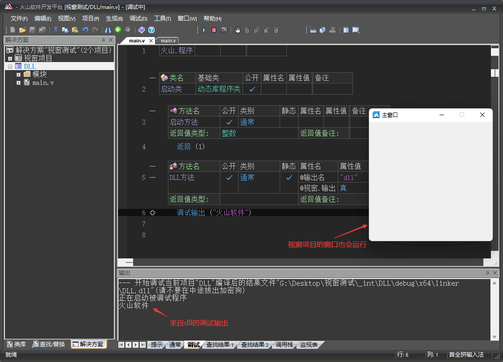
4、DLL编译
易语言演示：
DLL属性配置：
点击“程序->配置”菜单，即可设置DLL相关属性信息。
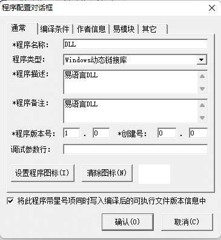
DLL编译：
点击“编译->编译/静态编译”菜单即可选择编译发布版。
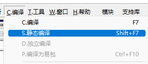
火山演示：
DLL属性配置：
按下快捷键“Alt+Enter”打开项目属性，即可设置DLL相关信息。
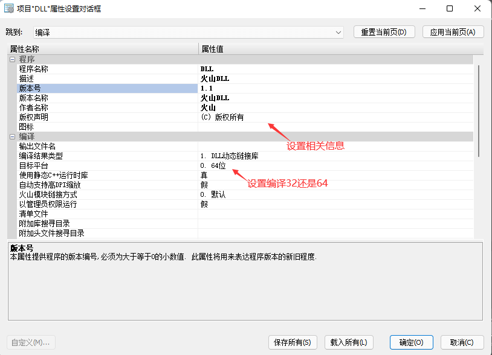
DLL编译：
设置完毕后，选择“生成->生成活动项目”即可编译发布版。
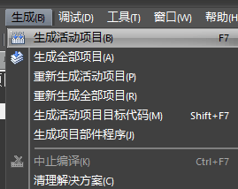